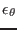
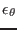
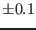

Next: Biogeochemical scenarios Up: Lake scenarios Previous: Lake scenarios Contents
The measurements for this Lago Maggiore
scenario were made during three days in winter 1995
(December 18-21) at the shore of Ispra
(45 49,244'N, 8
49,244'N, 8 36,377'E).
The measurements were carried out with an
uprising profiler located 150 m from the shore at a water depth of 42 m.
Such the sampled depth interval ranged from 30 m up to the surface.
On the profiler, an MST shear
probe, a fast temperature sensor
and temperature and conductivity probes were mounted such that
profiles of turbulent dissipation rate
36,377'E).
The measurements were carried out with an
uprising profiler located 150 m from the shore at a water depth of 42 m.
Such the sampled depth interval ranged from 30 m up to the surface.
On the profiler, an MST shear
probe, a fast temperature sensor
and temperature and conductivity probes were mounted such that
profiles of turbulent dissipation rate  , temperature variance
, mean temperature
, temperature variance
, mean temperature  and mean salinity
and mean salinity  could be derived. For a detailed description of the data analysis, see
Stips et al. (2002).
could be derived. For a detailed description of the data analysis, see
Stips et al. (2002).
Wind speed was measured from a small buoy about 30 m away from the
probe location with an anemometer at a height of 95 cm above the water
surface. The accuracy is  ms .
Air temperature and relative humidity were recorded at the measurement
location on shore at a height of 10 m above lake surface.
The cloud cover has been estimated every hour.
Incident solar radiation was measured at the meteorological station in
Pallanza, in a distance of about 10 km from the
measuring site.
An analysis of heat fluxes obtained by various bulk
formulae showed
however a significant deviation between the heat content of the water column
and accumulation of these heat fluxes. This could be due to the fact that these
bulk formulae are designed for oceanic conditions such that they are not
valid for a lake with weak wind conditions. Thus, instead of using the
calculated surface heat fluxes from bulk
formulae, they were
calculated from the heat gain of the water column under consideration
of the solar radiation.
.
Air temperature and relative humidity were recorded at the measurement
location on shore at a height of 10 m above lake surface.
The cloud cover has been estimated every hour.
Incident solar radiation was measured at the meteorological station in
Pallanza, in a distance of about 10 km from the
measuring site.
An analysis of heat fluxes obtained by various bulk
formulae showed
however a significant deviation between the heat content of the water column
and accumulation of these heat fluxes. This could be due to the fact that these
bulk formulae are designed for oceanic conditions such that they are not
valid for a lake with weak wind conditions. Thus, instead of using the
calculated surface heat fluxes from bulk
formulae, they were
calculated from the heat gain of the water column under consideration
of the solar radiation.
Data files:
| salz_lmd95.dat | profiles of measured salinity in ppt for initial conditions and relaxation |
| temp_lmd95.dat | profiles of measured potential temperature for initial conditions and |
| relaxation | |
| eps_lmd95.dat | profiles of measured dissipation rate for validation |
| hflu2_05lt.dat | surface heat fluxes calculated according to Kondo (1975) |
| momentumflux.dat | surface momentum fluxes calculated according to Kondo (1975) |
For a discussion of the simulation, see Stips et al. (2002).
Karsten Bolding 2012-12-28